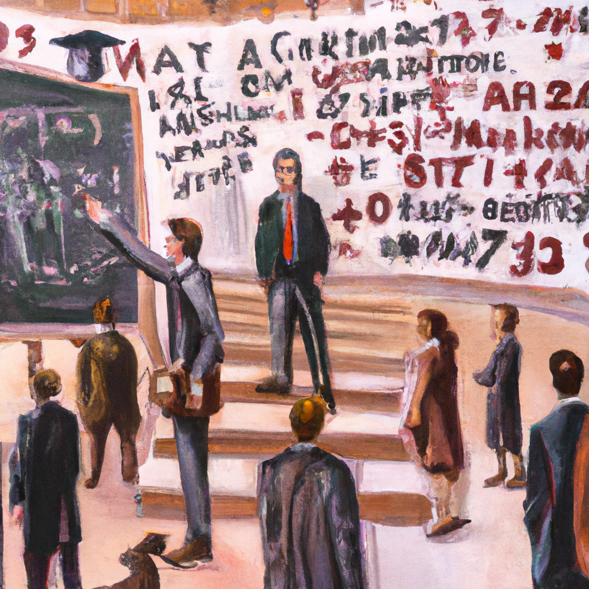

Why AI will never replace a mathematician
As technology advances, many people have been asking the question: will AI ever replace mathematicians? The answer to this question is both complicated and simple at the same time.
Firstly, it is important to note that the field of mathematics is incredibly complex and nuanced. There are multiple layers of logic and levels of abstraction that must be taken into account before any theorem can be proved. This means that machines and computer programs are still far from being able to completely understand the complexities of mathematics.
At the same time, it is important to note that AI has been making great strides in the field of mathematics. Automated theorem proving (ATP) has become increasingly sophisticated and can now prove simple theorems with relative ease. However, this only works with very simple theorems or those that have been specifically programmed in.
When it comes to more complex theorems, the process of ATP becomes more difficult. AI simply does not have the same ability as a mathematician to understand the nuances of the problem and come up with creative solutions. A mathematician can take a problem, understand the context, and then come up with a solution that works. AI cannot do this yet, and so it will never be able to replace a mathematician.
In conclusion, AI will never replace mathematicians. While it has made great strides in automated theorem proving, it is still far from being able to understand the nuances of mathematics. AI is still unable to come up with creative solutions to complex problems, and so it will never be able to compete with the power of a mathematician's mind.